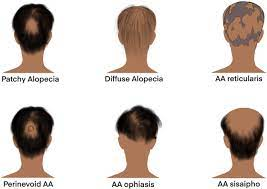
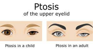
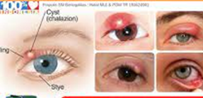
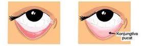
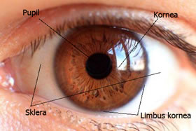
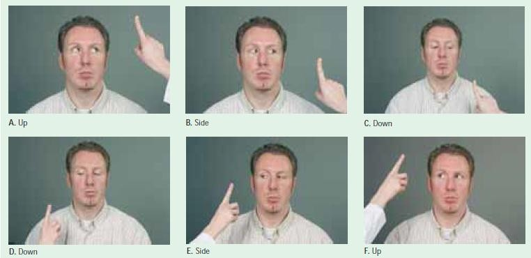

Pembelajaran Tentang Tubuh
Pemeriksaan Kepala dan Leher
Warna Rambut
Cara Kerja : Inspeksi
Kualitas Rambut
Mudah dicabut / RontokCara Kerja : Palpasi
Ketebalan Rambut
dan distribusi rambut merataCara Kerja : Palpasi & Inspeksi
Ketombe
Cara Kerja : Inspeksi
Seborrhoe
borokCara Kerja : Inspeksi

Cara Kerja : Inspeksi
Alopeksia(botak)
dan parasit (kutu rambut)Cara Kerja : Inspeksi
Lesi
tidak ada lesi terbuka / tertutupCara Kerja : Inspeksi
Cicatrix
tidak ada lesi terbuka / tertutupCara Kerja : Inspeksi

Bentuk Kepala
microcephalus & macrocephalusCara Kerja : Inspeksi
Wajah
kesimetrisan, pergerakan, ekspresi, pigmentasi, acne, tiks dan scarCara Kerja : Inspeksi
Hidrasi Kulit Dahi
fingerprint : dehidrasi/tidakCara Kerja : Palasi
Alis Mata
simetris atau tidakCara Kerja : Inspeksi
Bulu Mata
simetris atau tidak, distribusiCara Kerja : Inspeksi


Cara Kerja : Inspeksi
Kelopak Mata
posisi, edema, ptosis atau tidak, hordeolum atau tidak, lagopthalamus atau tidakCara Kerja : Inspeksi
Bola Mata
letak, dalam/cekung, menonjol (exopthalamus)Cara Kerja : Inspeksi
Cara memeriksa :

Cara Kerja : Inspeksi
Conjunctiva
warna, ada peradangan atau tidak
Cara Kerja : Inspeksi

Cara Kerja : Inspeksi
Sklera
warna (Normal :putih dan jernih/ tidak normal kuning)Cara Kerja : Inspeksi
Pupil
bentuk ukuran (normal:isokor / tidak normal:anisikor)warna, reaksi pupil (normal:miosis / tidak normal:midriasis)
Cara Kerja : Inspeksi
Pemeriksaan Reflex Pupil
- tutup salah satu mata pasien
- sinari mata yang tidak ditutup dengan penlight
- pada keadaan gelap maka pupil akan membesar
- pada keadaan terang maka pupil akan mengecil
Cara Kerja : Inspeksi
Ketajaman Penglihatan
anjurkan pasien untuk membaca/menebak gambar dalam jarak baca 30 cm dimana sebelumnya dikaji apakah pasien menggunakan kacmata atau tidak dan ditanya apakah pasien bisa membaca/ tidak
Cara Kerja : Inspeksi
Palpasi pada mata
Cara Kerja : Palpasi

Cara Kerja : Inspeksi
Pergerakan Bola Mata
gerakan bola mata ireguler : nygtagmus
Cara Kerja : Inspeksi
Cara inspeksi gerakan mata:
- Pasien berdiri/duduk berhadapan dengan pemeriksa
- Tutup mata klien sebelah
- Instruksikan pasien mengikuti pergerakan jari pemeriksa pada jarak 15-30 cm sambil kepala tegakdan tidak bergerak
- Gerakkan jari ke 8 arah , kemudian kembali ke titik tengah dan gerakkan ke arah superior 50°, temporal 90°, nasal 60°, inferior 70°
- Gerakan jari tidak boleh terlalu cepat
- Normal : pergerakan bola mata tanpa adanya nystagmus (gerakan bola mata irreguler)
- Bila ditemukan nystagmus maka amati frekuensi (cepat/lambat)
This is the third item's accordion body. It is hidden by default, until the collapse plugin adds the appropriate classes that we use to style each element. These classes control the overall appearance, as well as the showing and hiding via CSS transitions. You can modify any of this with custom CSS or overriding our default variables. It's also worth noting that just about any HTML can go within the
.accordion-body, though the transition does limit overflow.
This is the third item's accordion body. It is hidden by default, until the collapse plugin adds the appropriate classes that we use to style each element. These classes control the overall appearance, as well as the showing and hiding via CSS transitions. You can modify any of this with custom CSS or overriding our default variables. It's also worth noting that just about any HTML can go within the
.accordion-body, though the transition does limit overflow.
This is the third item's accordion body. It is hidden by default, until the collapse plugin adds the appropriate classes that we use to style each element. These classes control the overall appearance, as well as the showing and hiding via CSS transitions. You can modify any of this with custom CSS or overriding our default variables. It's also worth noting that just about any HTML can go within the
.accordion-body, though the transition does limit overflow.
This is the third item's accordion body. It is hidden by default, until the collapse plugin adds the appropriate classes that we use to style each element. These classes control the overall appearance, as well as the showing and hiding via CSS transitions. You can modify any of this with custom CSS or overriding our default variables. It's also worth noting that just about any HTML can go within the
.accordion-body, though the transition does limit overflow.